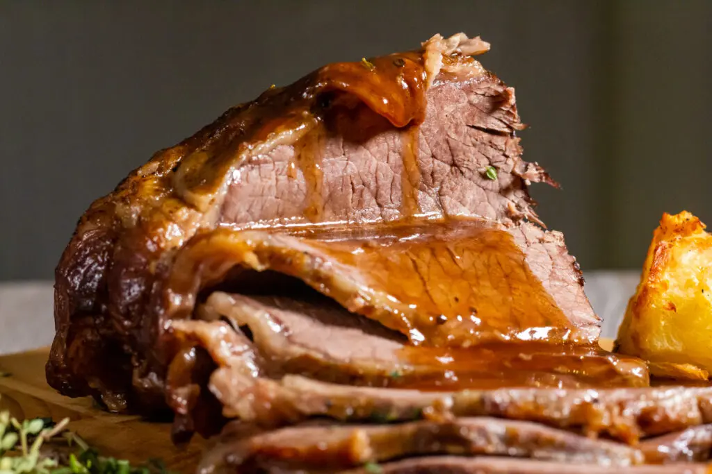

Slow Cooker Roast Beef

This Slow Cooker Roast Beef can't be beaten for convenience or taste!
If you do some research you'll find many "one pot roast" recipes for slow cooker that involve throwing everthing (potatoes included) into the crockpot and leaving it to cook.
Boiled potatoes in gravy? No thanks. It should be illegal to eat a roast without proper oven-baked roast potatoes! Also, they usually use a brisket cut of beef which works
better for pulled beef style recipes and doesn't slice too well.
Ingredients
- 1 kg (2.2 lb) topside or top roound beef
- 500 ml (2.1 cups) beefs stock
- 187.5 ml (0.8 cups) red wine ¼ bottle
- 2 carrots roughly chopped
- 1 onion sliced
- 6 tbsp cornflour
- 3 tbsp tomato puree
- 2 tsp sugar
- 1 tsp salt
- 1 tsp pepper
- 1 tbsp olive oil
Steps
- Add the carrots and onions to the slow cooker, then add 3 tbsp of cornflour and stir to ensure an even coating. Rub a little oil all over the beef and season well with
salt and pepper. Sear the beef all over in a hot pan, and transfer to the slow cooker.
- Add the beef stock, red wine, tomato puree and sugar, ensuring that the beef is mostly covered by liquid. Cook on low for 5 hours, or high for 3 hours. Once cooked,
remove the beef from the slow cooker and cover with foil to keep warm. Rest the beef for up to 30 minutes. If you want to be sure about cooking times,
use a meat thermometer.
- Reduce the remaining liquid and vegetables in the slow cooker to a gravy consistency, adding 3 tbsp of cornflour to thicken (remove a little liquid, mix in the cornflour
to make a paste, and mix it back into the gravy). If you've got a slow cooker with a metal pot you can do this by transferring it straight to the hob, if not, you'll need to
transfer the contents of the slow cooker to a pan.
- When you're ready to serve, slice the beef with a sharp knife and coat with plenty of red wine gravy!